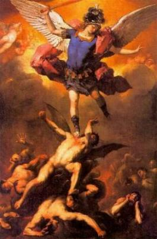
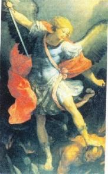
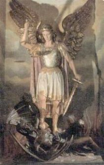

O PAI ETERNO criou os Anjos, espíritos puros dotados de graças especiais e dons sobrenaturais, com conhecimento profundo, inteligência aguçada e o "livre arbítrio", que lhes dão plena liberdade de movimentos, ações e pensamentos. Vivem em comunhão de amor com o CRIADOR, gozando da Visão Beatífica e são habitantes permanentes do Paraíso Divino, sede de toda Sabedoria e do Amor de DEUS.
Entretanto, da mesma maneira que a humanidade para alcançar o Céu tem que cumprir uma missão terrestre, os Anjos foram submetidos a um teste de fidelidade, pela suprema Vontade do SENHOR.
Lúcifer que pertencia ao Coro dos Serafins, de notável beleza e uma prerrogativa especial de comunicar a Luz Divina à toda criação, não permaneceu fiel, revoltou-se contra o CRIADOR. Com sua liberdade individual ensoberbeceu-se, deu espaço a sua vaidade que cresceu e ultrapassou os limites da razão, colocando-o por sua vontade Angélica poderosa, orgulhosamente num pedestal de superioridade, pronunciando a sua própria sentença, ao bradar:
"Não servirei"...

Sendo a natureza humana inferior a natureza Angélica, Lúcifer e aqueles que concordaram com ele, os Anjos que o apoiaram na rebelião, não quiseram servir a natureza humana do SENHOR JESUS, como também não aceitaram servir e prestar obediência a VIRGEM MARIA, pelo fato dela ser uma criatura humana, embora a mais excelsa de todas.
Segundo a Sagrada Escritura os Anjos revoltados pertenciam a diversos Coros, entretanto a maioria pertencia ao Coro das Virtudes, Dominações e Potestades.
Com a rebelião, rompeu-se os laços de amor
que uniam Lúcifer e seus Anjos à 
Lê-se no livro do Apocalipse:
"Houve então uma batalha no Céu: Miguel ( o Arcanjo) e seus Anjos guerrearam contra o Dragão (o demônio, Satanás ou diabo, nomes dado a Lúcifer, Anjo das Trevas). O Dragão batalhou, juntamente com seus Anjos (os Anjos que aderiram a rebelião, porque não acataram a autoridade que o PAI ETERNO deu a CRISTO), mas foram derrotados, e não se encontrou mais um lugar para eles no Céu. Foi expulso o grande Dragão, a antiga Serpente, o chamado Diabo ou Satanás, sedutor de toda a terra habitada - foi expulso para a Terra, e seus Anjos foram expulsos com ele". (Ap 12,7-9)
Eram Anjos de luz, seres espirituais puros, repletos de virtudes e dons especiais, e mesmo assim, com sua liberdade, misteriosamente transgrediram a lei do amor e da obediência, revoltando-se contra o próprio DEUS. Foram punidos pelos Anjos que permaneceram fieis ao CRIADOR e foram precipitados no inferno até o fim do mundo. Por sua própria natureza, como possuem vontade poderosa, não recuam de suas decisões, e deste modo, não existe possibilidade de se arrependerem do mal praticado e de se converterem para alcançarem a misericórdia Divina. Continuarão praticando o mal até a consumação dos séculos. Os Anjos Rebeldes formam a terrível legião de demônios e diabos, que infernizam a vida da humanidade, procurando afastá-la de DEUS, com a finalidade de destruí-la e também de destruir o mundo.